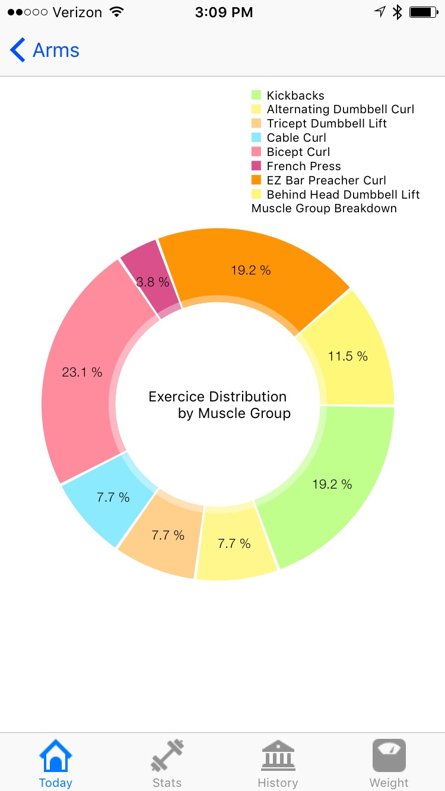

Home
This site is currently under construction! While much of the site is functional, content will is being added on a regular basis.
Last content update: Februrary 4th, 2016
About
Bio
My name is John McAvey and I have been involved in Information Technology and Computer Science for the bulk of my life. My interests in biology and computer science have provided me the oppertunity to continually grow as a life-long learner. My work as an IT infrastructure techinitian has given me insight into how technology is being employed to revolutionize the workplace as well as how to quickly and effectively create minimalist functional environments. This experience has helped me to develop intuitive user interfaces for applications I design. In addition to my work at school, I enjoy physical activites such as basketball, and historical martial arts such as german longsword.
Work Experience
For a complete list of my work experience please see my LinkedIn page
Projects
Some paragraph explaining my project interests...
Civet
Civet is a research project exploring the application of managed languages, such as the Java Virtual Machine, to Intel's SGX chip. This project uses the Graphene library operating system to seperate secure and insecure Java execution and memory. This project is still under construction, so the runtime code is currently unavailable. However, the build tool is available to be viewed on github!
Liftracker
Liftracker is a simple iOS app designed to make weight training trackable. It is designed towards people who want to track their weight training progress without having to worry with navigating all the extranious features of other applications. Liftracker has simple analytical tools built in and aims to provide the user with the simplest experience possible. Get the app out of your way, and get to training!
Logo Interpreter
The Logo language is designed to direct a 'turtle' around the screen. It allows users to specify instructions such as pen-up/down, left, right, forward, and backward. In our scalable software class, we designed Logo interpreters using the Gramblr parsing engine. This interpreter is a GUI for writing Logo code and interacting with the turtle.
Papers
This site is currently under construction! While much of the site is functional, content will is being added on a regular basis.
Last content update: Februrary 4th, 2016